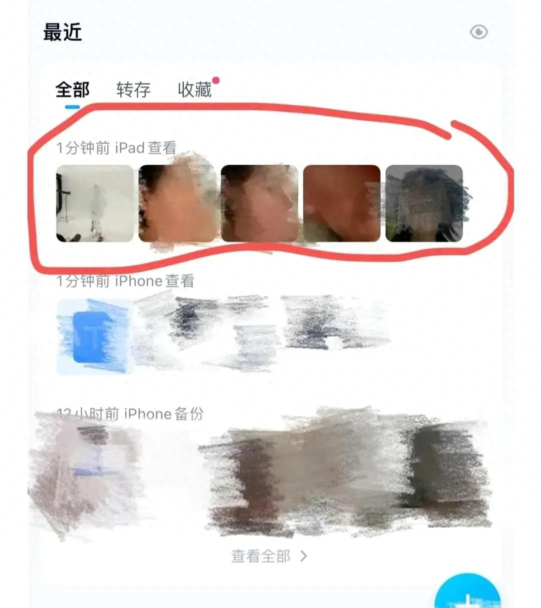

Challenges
Though the digital age brings in people conveniences and opportunities, in some ways it lacks supervision and order. Some people take advantage of this gray area and invade women’s privacy. This page includes several common forms of harassment women are facing in the digital space in real cases.
In a report provided by Durham University, online harassment is defined as “use of information and communication technologies by an individual or group to repeatedly cause harm to another person.” Cyberbullying, online insults are some typical examples of it. However, there are even more vicious harassments happening online to women. The Harassers steal images from girls without permission and publish the images into other platforms.
On April 23rd, Yingying who studies at Zhejiang University in China finds her photos were stolen and posted on instagram account accidentally. A senior girl found little A through their mutual friends, saying that it was inconvenient to chat on instagram and wanted to add Yingying’s wechat (a commonly used chatting application in China). But Yingying hasn’t logged into her instagram for a long time and never mentioned chatting with other people on instagram, it was someone who stole her photo and put it in her name. The account has been constantly stealing Yingying’s photo from her wechat posts and posting photos to instagram accounts for a year. The invader uses Yingying’s name to chat with other girls and harass them.
Yingying, the senior girl and their mutual friends decided to find this invader. The invader is targeting college alumni. Yingying groups her thousands of wechat friends and posts the same images but different marks for different groups. After several rounds of screening in two weeks, Yingying finds out the invader, Yanbo Wu. Yanbo was a senior in Yingying’s university and now in Rochester University for his master degree. In wechat, Yingying said I find you to Yanbo Wu. The same day, the fake Yingying instagram account was signed out.
Till now, Yanbo Wu only apologized to Yingying on wechat. The legal procedure is still processing. Other people reported this event to Rochester University, trying to gain more attention.
However, Yingying’s story is not a case study.
A famous Chinese vlogger FOKU has been harassed online by an account over a year. She posted a video "Eyes on you" and shared her experiences and process finding out the harasser.

Nina Jankowicz, is an author who writes "How to Be a Woman Online: Surviving Abuse and Harassment, and How to Fight Back" and studies the topic for years. She found her images and face were posted on a porn website by somebody who used deepfake technology.
Miss Lu and other 150 female friends shared their account information, Apple IDs and Baidu Cloud network, to their alumni Weixian as he said he’s doing software testing. However, their personal and private photos are downloaded and saved without commission.